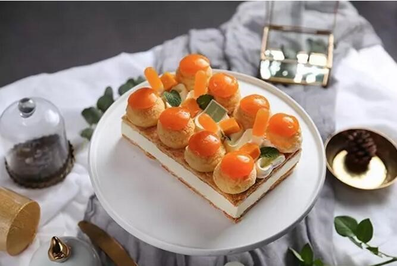

Yao Yao
Dessert chef Yaoyao is very young, but she has been taught by many dessert masters, including the famous Italian baker Giuliano , and the best dessert chef in France who won the Nobel Prize MOF in the dessert industry (MOF, "MOF" is Meilleur Ouvrier de France's Abbreviation, which means the best French craftsman, no Chinese compatriots have won this honor, and the only known non-American MOF Japanese.)

